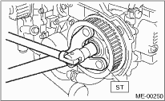
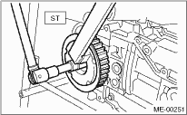

NOTE:
If only a single part is replaced, perform the work without removing the engine from vehicle.
1. Remove the V-belts. 
2. Remove the crank pulley.
3. Remove the timing belt cover.
4. Remove the timing belt.
5. Remove the camshaft position sensor.
6. Remove the cam sprocket No. 2. To lock the camshaft, use the ST.
| ST 18231AA010 | CAM SPROCKET WRENCH |
NOTE:
CAM SPROCKET WRENCH (499207100) can also be used.

7. Remove the cam sprocket No. 1. To lock the camshaft, use the ST.
| ST 499207400 | CAM SPROCKET WRENCH |
